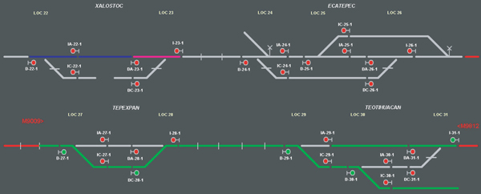
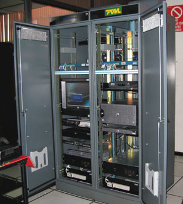
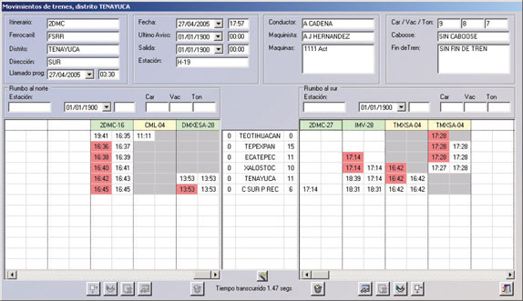
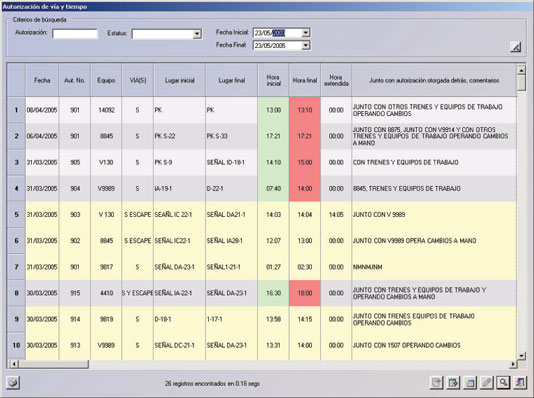

Virtus CCT
Virtus CCT es un sistema de despacho de trenes en tiempo real asistido por computadora, provee herramientas gráficas y audibles que soportan una operación de despacho eficiente y confiable. Cuenta con características de seguridad para mantener siempre una correspondencia entre los elementos de campo y las condiciones de operación.
El sistema adquiere datos mediante drivers de comunicación lo que permite la flexibilidad de operar con diferentes sistemas de adquisición de datos.
Adicionalmente incluye diferentes niveles de seguridad con accesos específicos permitiendo la configuración de despacho, supervisión y mantenimiento.

Características
- Interfaz amigable en ambiente Windows
- Disponibilidad de información
Cada actividad de campo y despacho es almacenada en una base de datos SQL, incluyendo todas las alarmas configuradas, por tanto, se extiende la capacidad de reportes
- Configurable
Cada estación de trabajo puede ser configurada individualmente
- Escalable
Trabaja tanto en una simple estación de trabajo, como en un sistema completo cliente-servidor consistente en varias computadoras
- Redundancia en estaciones de trabajo, servidores y equipo de comunicaciones.

Operación
- Hot backup
El sistema mantiene una sincronización total entre servidores manteniendo las condiciones de operación actuales.
- Despacho
Provee la capacidad de despacho desde cualquier estación de trabajo o servidor en la red.
- Reproducción
En cualquier momento el sistema puede reproducir las actividades almacenadas, brindando una útil herramienta en la evaluación de incidentes.
- Simulación
En este modo de operación el sistema simula el despacho de trenes con propósitos de capacitación. Esta información también puede ser reproducida para evaluación.
- Herramientas de operación
El sistema incluye utilerías de software adicionales para el mantenimiento de cuentas de usuarios, configuración de redundancia, estaciones de trabajo, estadísticas de comunicaciones y configuración general del sistema.

Características
- El usuario final puede dibujar nuevos diagramas fácilmente
- Bloqueo de maquinas de cambio y vías
- Control de máquinas de cambio
- Ruteo NX (Entradas/Salidas)
- Mantenimiento seguro de campo mediante bloqueo de localidades
- Sistema de pruebas para equipo de comunicaciones
- Registro y reproducción de eventos
- Panel de control de alarmas
- Hoja de trenes automática
- Administración de fallas de trenes y observaciones del despacho>
- Reportes flexibles

Requerimientos
- PC con procesador Pentium IV, 256 MB RAM o mayor
- Microsoft Windows 2000, Microsoft Windows XP o Microsoft Windows 2003
- Resolución de vídeo: 1280 x 1024 o mayor
Tecnología de punta
- Desarrollado para Microsoft .NET Framework
- Programado en C#
- Base de datos SQL Server 2000
- Diseño flexible y robusto orientado a objetos